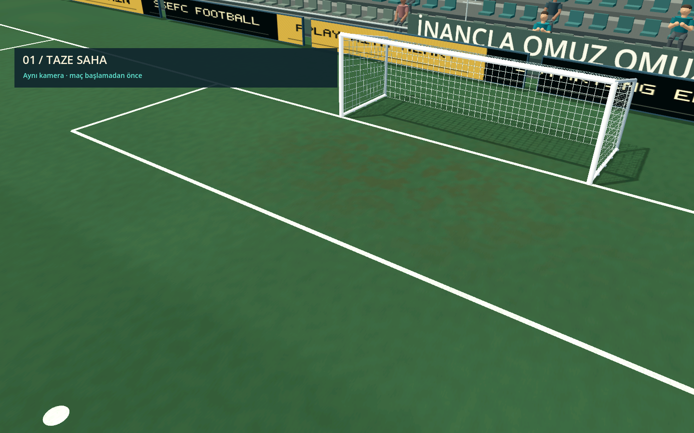
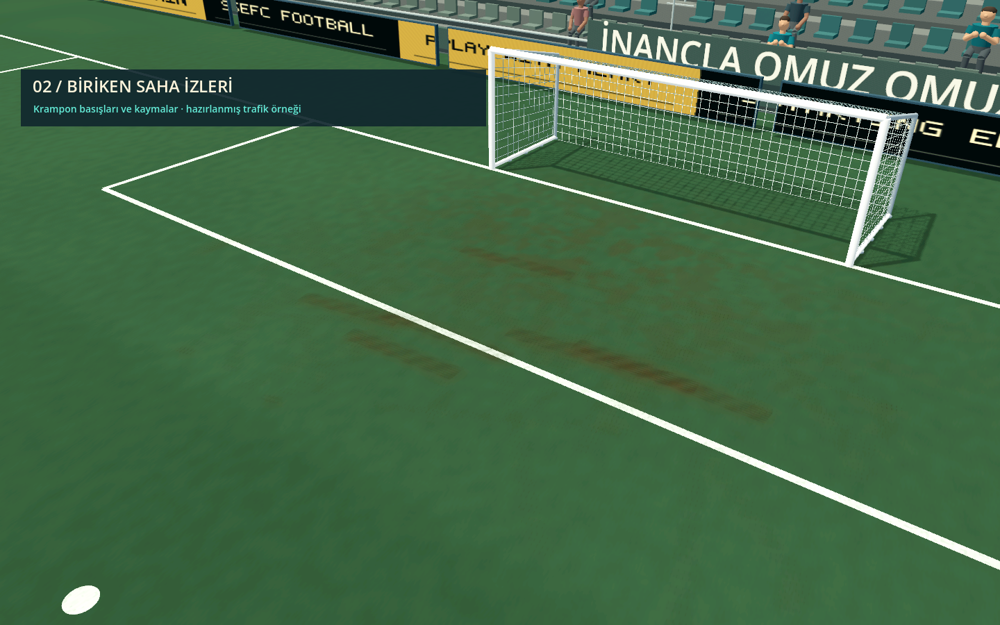
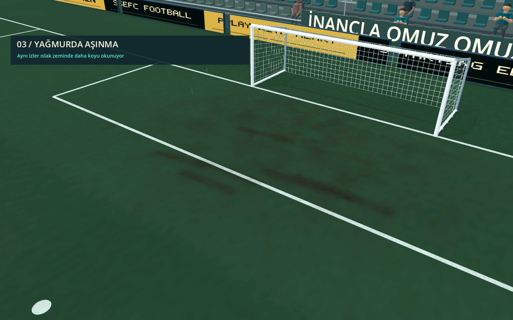
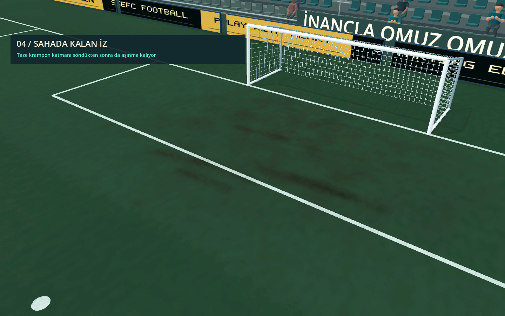
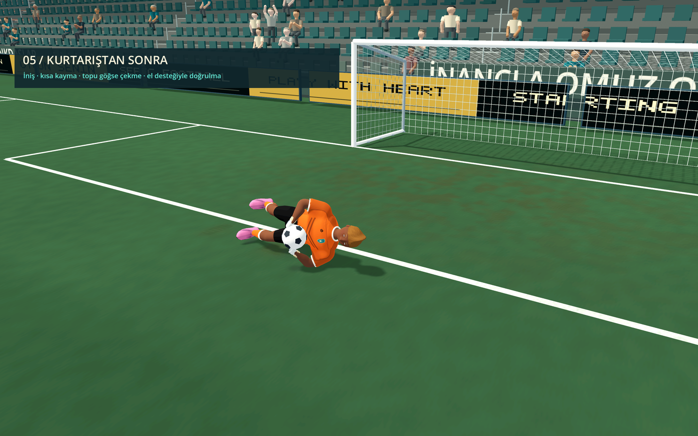
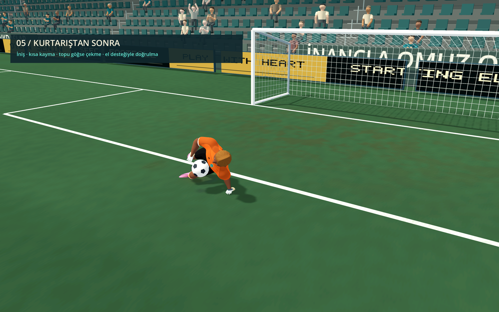
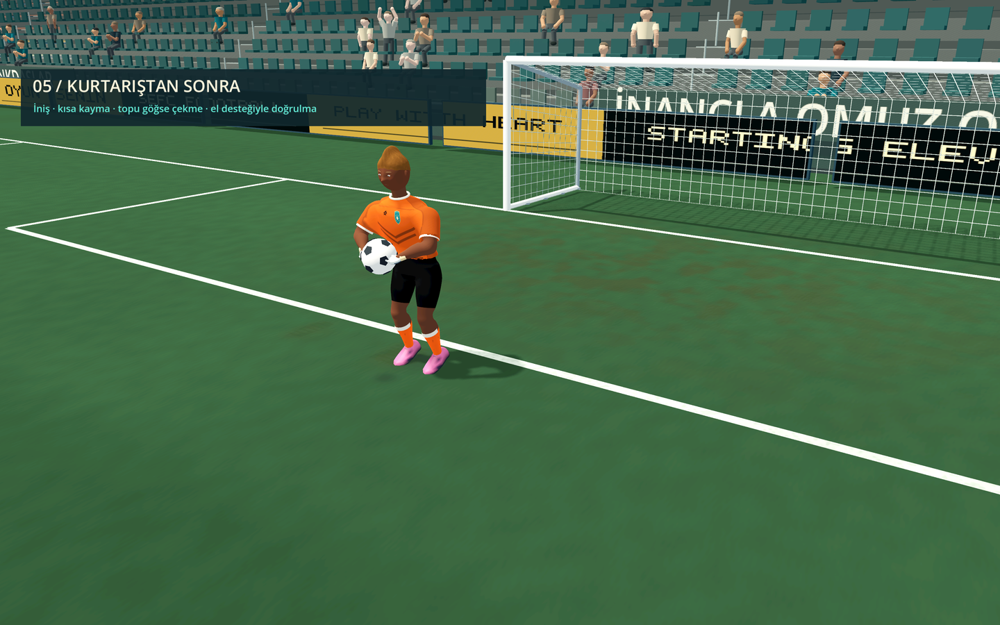
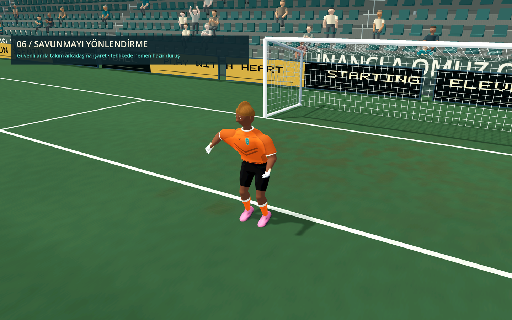
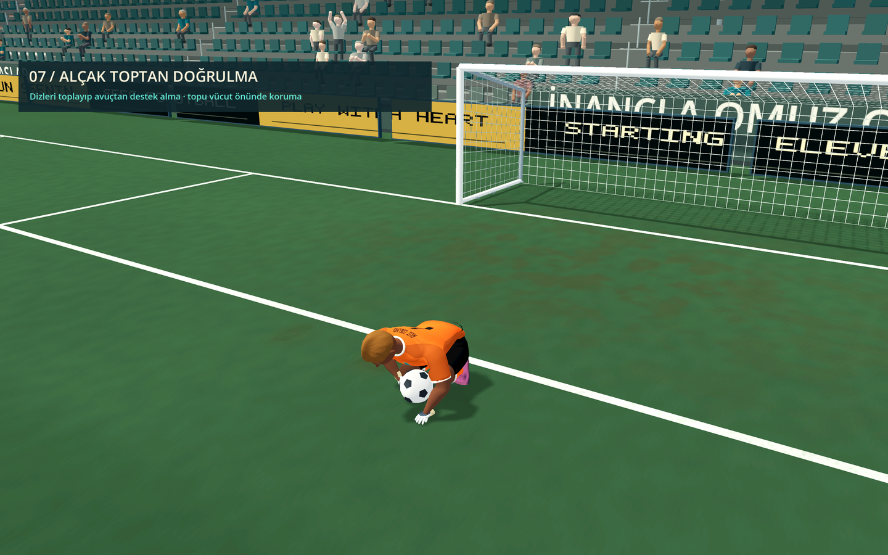

SAHA · ÖNCE
Maç başlangıcı
Stadyumun temel çim dokusu korunuyor. Yeni maç, önceki maçta birikmiş temas izlerini temizliyor.
Maç boyunca biriken krampon ve kayma izleri; kurtarışın ardından kayma, topu toplama ve el desteğiyle doğrulma. Dokuz oyun karesi ve kısa bir animasyon.
Kaleci yere indikten sonra kısa süre kayıyor, topu vücuduna çekiyor ve serbest avucundan destek alarak doğruluyor. Videoyu indir

Stadyumun temel çim dokusu korunuyor. Yeni maç, önceki maçta birikmiş temas izlerini temizliyor.

Aynı kamera ve ışık altında, hazırlanmış temas örneği. Ayak basışları çimi ezer; kaymalar daha uzun, kopmuş çim izleri bırakır.

Yağmur, açığa çıkan toprağı koyulaştırır. Islak zemindeki yeni temaslar da aynı yerde daha güçlü iz biriktirir.

İnce, taze taban izleri zamanla sönerken birikmiş çim aşınması maç boyunca kalır. Yağmurun durması izleri silmez.

Başarılı tutuşun ardından eller ve top vücudun önüne gelir. Top mevcut fiziksel tutuşla taşınır.

Destek eli dalış yönüne ve kalecinin baktığı yöne göre seçilir. Diğer kol topu tutarken kaleci dizini toplayarak yükselir.

Toparlanma tamamlanınca iki el yeniden topun çevresine gelir. Mevcut elden dağıtma ve topu yere bırakma kontrolleri çalışır.

Güvenli bir anda gerçek bir savunmacıya kısa işaret yapar. Top yaklaşınca veya hızlı bir vuruş gelince jest kesilir.

Alçak topu kapatma hareketinde kalça alçalır, dizler katlanır ve avuç zemine ulaşır. Destek sona erince iki el tekrar topa döner.
Görüntüler oyunun Godot Mobile/Metal renderından alındı. Trafik, kamera ve kurtarış sonrası tutuş örnekleri inceleme için hazırlanmıştır; bunlar tam bir maçın zaman atlamalı kaydı değildir. Video 60 kareyi 30 kare/saniyede gösterir. Uygulama ve doğrulama notları · Önceki görsel eklemeler